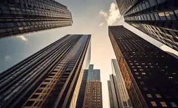

Portfólio
Uma seleção de imagens urbanas recentes.




Sobre
Sou fotógrafo especializado em capturar cenas urbanas, documentando a vida e a arquitetura das cidades.
- Nome: João Silva
- Local: São Paulo, Brasil
- Disponibilidade: Ensaios e encomendas
Serviços
- Ensaios urbanos
- Fotografia comercial e editorial
- Workshops e produção de conteúdo
Contato
Entre em contato para orçamentos e agendamentos.
Email: contato@fotografiaurbana.ex
Telefone: +55 11 99999-9999
Publicações
Revistas e exposições recentes.
- Revista Rua — Edição 12
- Galeria Central — Exposição "Cidade em Movimento"